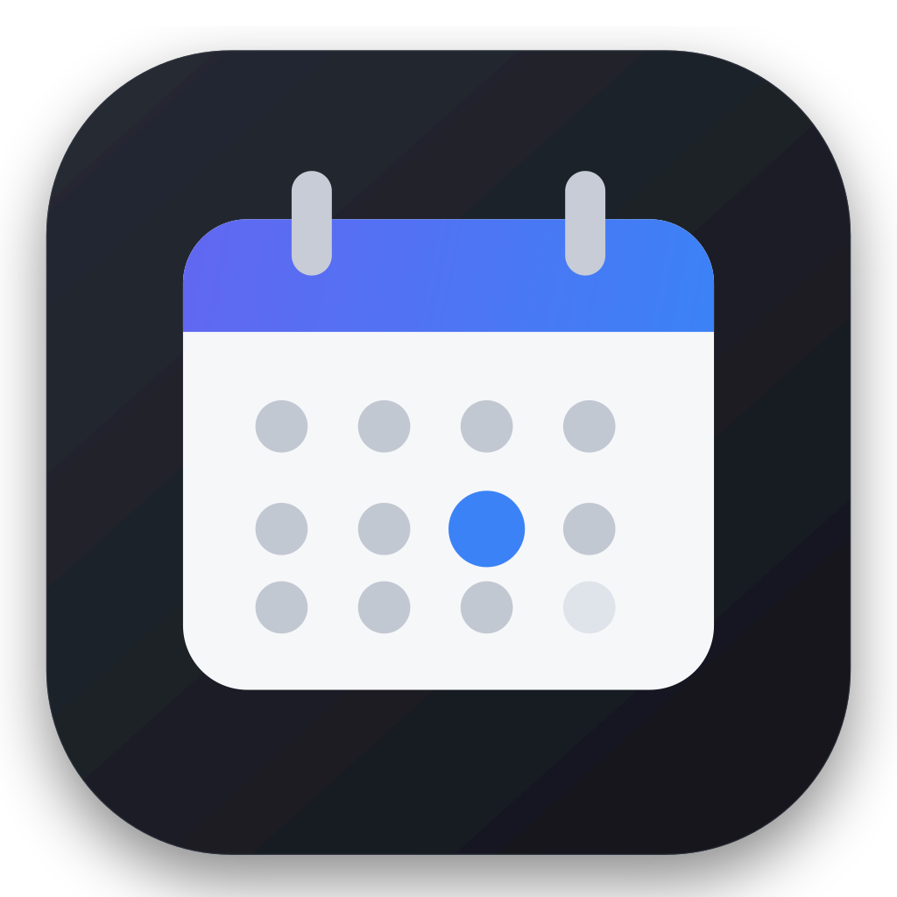

Personal project · Linux

Desktop Calendar
A lightweight desktop calendar that lives in your system tray and syncs your Google calendars — local-first and private.
What it does
- Shows your Google calendars in a compact tray popup and a full month view.
- Create, edit, and delete events (with Google Meet links and recurrence).
- Per-calendar show/hide, event search, reminders, and time-zone / format settings.
- Works offline — events are cached locally so the calendar opens instantly.
Privacy in one line
Everything runs on your own machine. The app talks directly to Google on your behalf; your calendar data is never sent to the developer or any third party. See the full Privacy Policy.